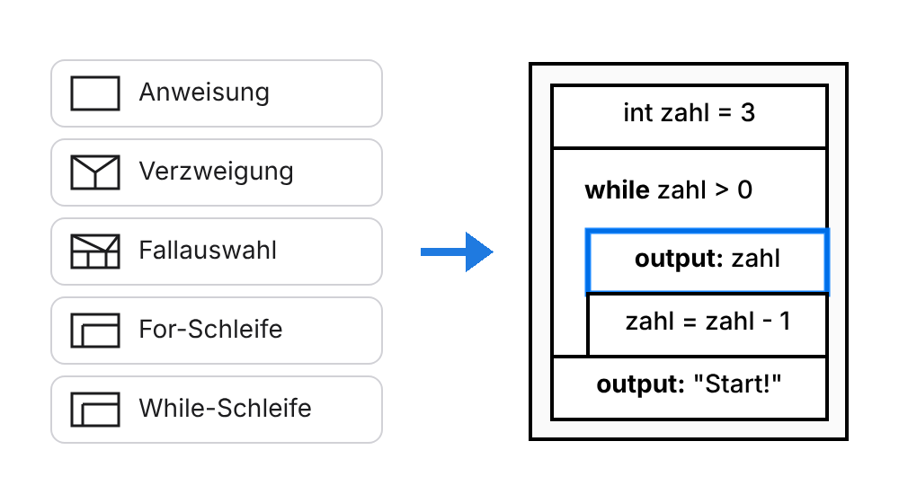
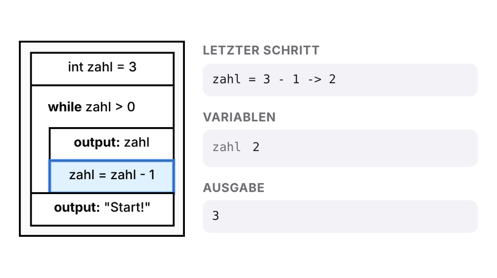
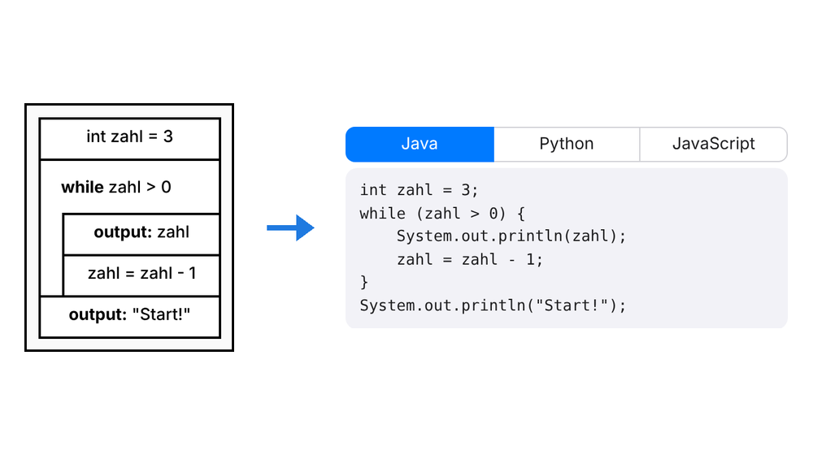
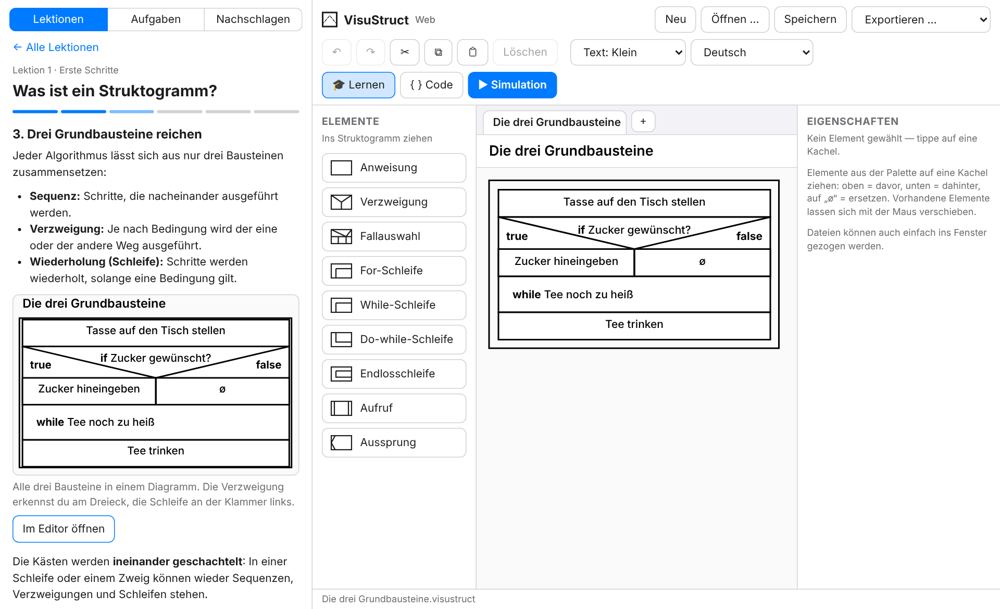
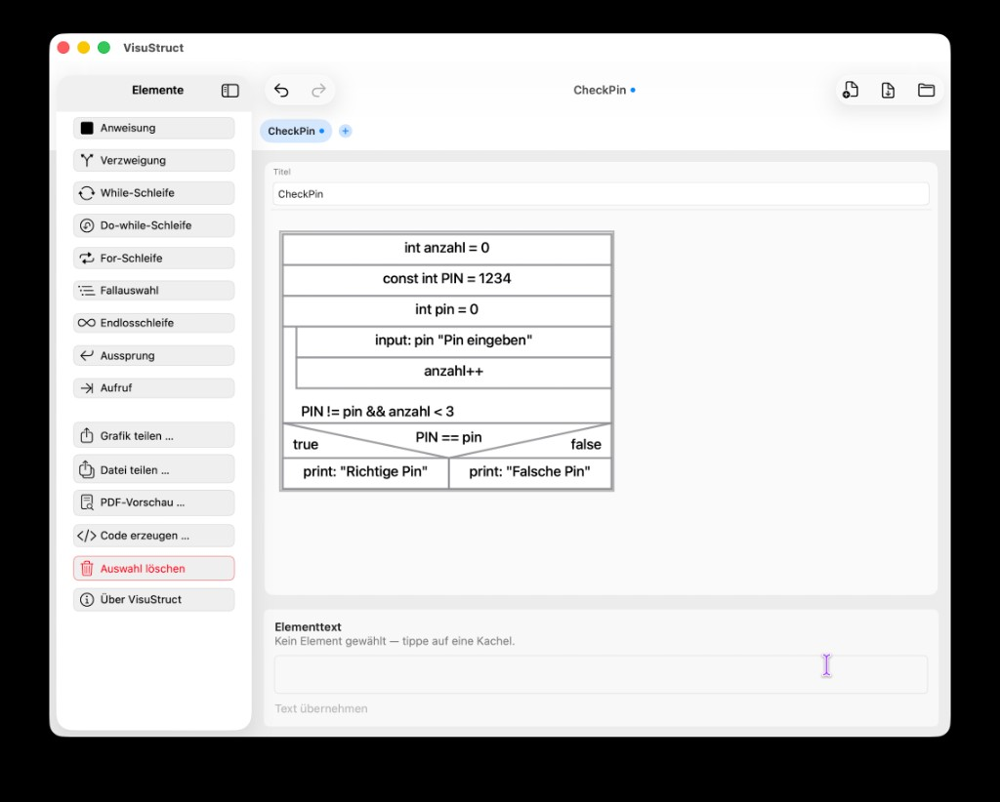
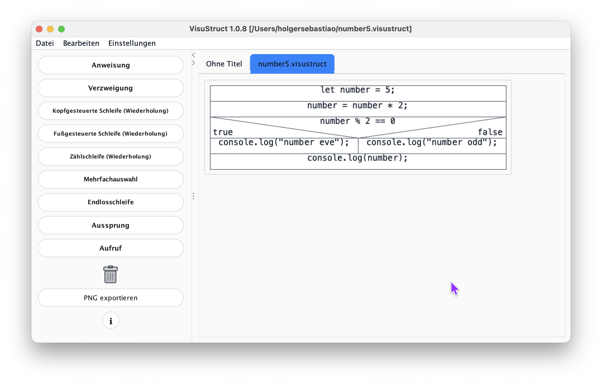

Bauen per Ziehen
Anweisung, Verzweigung, Schleifen und Fallauswahl aus dem Bereich „Elemente“ ins Diagramm ziehen und den Text direkt eintippen.
Kostenlos · ohne Anmeldung · ohne Installation
Mit VisuStruct entwickelst du Algorithmen als Struktogramm nach Nassi-Shneiderman: Elemente hineinziehen, Schritt für Schritt ablaufen lassen und als Java-, Python- oder JavaScript-Code ausgeben.
Läuft auf Computer, Tablet und Handy. Deine Dateien bleiben auf deinem Gerät.
So funktioniert es

Zieh die Bausteine ins Struktogramm und beschreibe jeden Schritt in einfachen Worten oder in Code.

Starte die Simulation und verfolge Block für Block, wie sich die Variablen verändern.

Lass dir Java, Python oder JavaScript erzeugen und arbeite in deiner Entwicklungsumgebung weiter.
Funktionen
Ein Editor für den Unterricht: übersichtlich, genau und ohne Ablenkung.
Anweisung, Verzweigung, Schleifen und Fallauswahl aus dem Bereich „Elemente“ ins Diagramm ziehen und den Text direkt eintippen.
Die Simulation zeigt den aktiven Block, die Variablen und die Ausgabe. So siehst du sofort, ob dein Algorithmus stimmt.
Tippst du Java-Code, baut sich das Struktogramm live mit auf – und umgekehrt. Dazu übersetzt VisuStruct nach Python und JavaScript.
Als PNG, SVG oder PDF speichern oder direkt ausdrucken, zum Beispiel für Arbeitsblätter und Klausuren.
Oberfläche und Lektionen gibt es auf Deutsch, Englisch und Portugiesisch.
Kein Konto, kein Hochladen. Gespeichert wird als .visustruct-Datei auf deinem Gerät.
Lernbereich
Neben dem Editor wartet ein Lernbereich: Lektionen erklären, wie du den Editor bedienst und was hinter Sequenz, Verzweigung und Schleife steckt. Was du liest, probierst du gleich daneben aus.
Dein Fortschritt bleibt in deinem Browser gespeichert. Die Lektionen gibt es auf Deutsch, Englisch und Portugiesisch.

Neu: VisuBot
Mit VisuBot programmierst du den Lernroboter mBot2 von Makeblock, als Struktogramm oder in Java. Ohne Roboter fährt er in einem 3D-Simulator. Ist der echte mBot2 per USB-Kabel verbunden, fährt er jeden Schritt mit.
Den mBot2 brauchst du nur für den echten Roboter. Der Simulator läuft überall.

Neu: VisuObject
VisuObject ist die Welt für die Oberstufe. Du schreibst Java-Klassen in einem Projekt mit Packages, wie in Eclipse, und das UML-Klassendiagramm zeichnet sich daneben mit. Änderst du das Diagramm, ändert sich der Code, und umgekehrt.
Die Grundlagen lernst du in VisuStruct, danach geht es in VisuObject mit Klassen weiter.

Weitere Versionen
Alle Versionen nutzen dasselbe .visustruct-Format. Du kannst im Browser anfangen und in der App weitermachen, oder umgekehrt.


Download als .jar (Java erforderlich, z. B. Adoptium / Eclipse Temurin).
Java-App herunterladenDenk zuerst über Logik und Ablauf nach. Danach übersetzt du dieselbe Struktur in eine Programmiersprache deiner Wahl, Schritt für Schritt und gut nachvollziehbar.
Jetzt ausprobieren